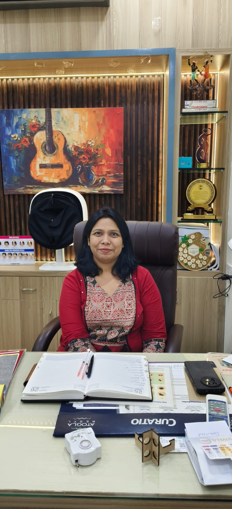
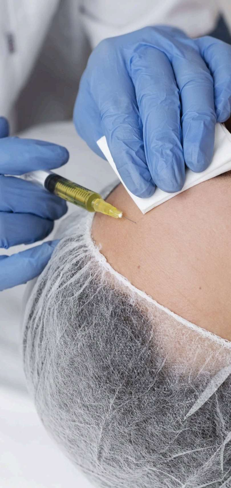
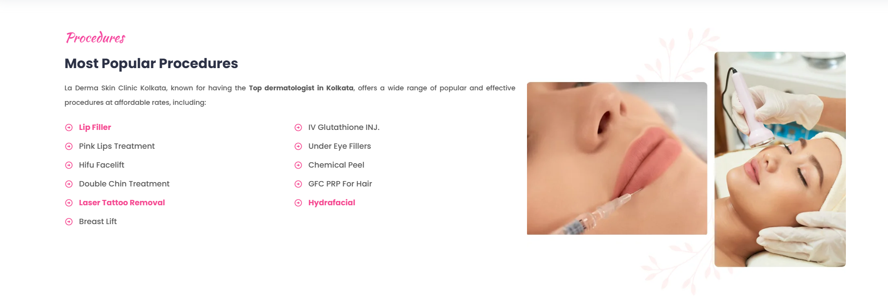
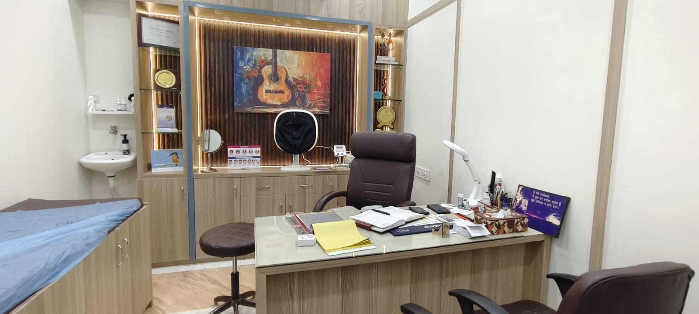

Satisfied Patients
Thousands of patients. One shared journey towards confident skin.
SKIN · HAIR · AESTHETICS · LASER
Discover a little more confidence in your own skin. Personalised skin, hair and laser care, with you at the heart of every treatment.
Treatment advice ke liye doctor consultation zaroori hai.
Thousands of patients. One shared journey towards confident skin.
Care across skin, hair, aesthetics and laser treatments.
Experienced care with a personal understanding of your skin.
Monday to Saturday. Closed on Sundays.
GET TO KNOW SKIN HAVEN

At Skin Haven, we bring skin, hair, aesthetic and laser care together for people across Bhilai and Durg. Every skin journey is personal, and so is the way we approach your care.
Whether you are looking for guidance on your skin, support for hair concerns or a consultation for laser hair reduction, your visit starts with a conversation. Share your concerns, ask your questions and understand the next steps before deciding on your care.
With 15+ years of experience, our focus is on personal attention and clear communication. Get to know Skin Haven and explore our clinic on the About Us page before your visit.
A LITTLE UNDERSTANDING. A BETTER START.
Explore common skin and hair concerns at Skin Haven, serving Bhilai and Durg. Start with what matters to you.
Talk to us about breakouts, lingering marks and changes in skin texture.
Tap to see photo ↻Discuss under-eye concerns and what you would like to understand about your skin.
Tap to see photo ↻A place to start a conversation about uneven tone and visible dark spots.
Tap to see photo ↻Share your concerns about changing skin and your personal care goals.
Tap to see photo ↻Discuss changes in skin tone and the questions you have about sun-exposed skin.
Tap to see photo ↻Bring your questions about hair fall, thinning and changes in your scalp.
Tap to see photo ↻Tell us about how your skin feels and what you want from your care routine.
Tap to see photo ↻A personal conversation about visible marks, skin texture and your expectations.
Tap to see photo ↻Not sure where to begin? Let's start with a conversation.
Book a ConsultationShowing all 8 concerns.
TREATMENTS AT SKIN HAVEN
Treatment suitability is assessed during a clinical consultation. Explore skin, hair and aesthetic care at Skin Haven.

Images are illustrative, not patient results. Every treatment starts with a clinical consultation.
Book a ConsultationMEET YOUR DERMATOLOGIST
MBBS, DDVL Dermatologist
Personalised skin & hair care in Durg–Bhilai
Get to know the doctor behind your care at Skin Haven. Dr. Sampreeti Sendur provides dermatology consultations for patients from Durg, Bhilai and nearby areas of Chhattisgarh, with attention to your individual skin and hair concerns.
Your consultation is a chance to discuss what has been bothering you, review previous treatment and understand your options. Recommendations are based on your diagnosis, skin type and personal needs, with clear guidance before any procedure.
About DoctorDR. SAMPREETI SENDUR SKIN HAVEN · DURG
PROCEDURES
Considering aesthetic care in Durg–Bhilai? Explore these procedures and speak with Skin Haven about your goals. Availability and suitability are confirmed during consultation.

BEFORE & AFTER GALLERY
Reference examples from the supplied La Derma gallery, not Skin Haven patient results. Individual outcomes vary.
Source: user-supplied La Derma reference images. Photos are examples, not a promise of treatment results.

WHY CHOOSE SKIN HAVEN?
Skin, hair and aesthetic care in Durg–Bhilai, with time to discuss your concerns and understand the next steps in your care.
Experience with a personal approach.
Meet Dr. Sampreeti Sendur, MBBS, DDVL.
Recommendations based on your individual concerns.
Discuss suitability before deciding on a procedure.
Explore your care needs in one place.
Visit our clinic near the new bus stand in Durg.
THE SKIN HAVEN VIDEO JOURNAL
Explore laser hair reduction with Skin Haven, your skin and hair clinic in Durg–Bhilai.
LASER HAIR REDUCTION
Take a look at our laser hair reduction video, then speak with the clinic about your questions and treatment suitability.
Explore Laser Hair Reduction ↗Every treatment begins with a consultation. Individual results vary.
PATIENT EXPERIENCES
Explore patient feedback for Skin Haven in Durg, welcoming patients from Bhilai and across Chhattisgarh.
SKIN HAVEN · DURG
Read patient experiences on our Google profile before planning your visit.
Read Google ReviewsBEEN TO OUR CLINIC?
Your feedback helps us understand your visit and helps others get to know the clinic.
Review us on GoogleCARE CLOSE TO HOME
Have a skin or hair concern? Meet Dr. Sampreeti Sendur at our Durg clinic for a personal consultation.
Plan Your VisitHEALTH TIPS
Explore skin and hair care topics from Skin Haven in Durg–Bhilai. Find a starting point for your next conversation with our dermatologist.
Health Tips
Explore common acne concerns and the questions you can bring to your dermatology consultation.
Health Tips
Get to know the hair and scalp concerns you may want to discuss with your dermatologist.
Health Tips
Explore pigmentation concerns and learn what to discuss before choosing a treatment.
Health Tips
Read about a consultation-led approach and the questions to ask when exploring aesthetic care.
PLAN YOUR VISIT · DURG–BHILAI
Book a skin, hair or aesthetic consultation with Dr. Sampreeti Sendur at Skin Haven, Durg. We welcome patients from Bhilai and across Chhattisgarh.
Our clinic is in Durg, with consultations for patients from Bhilai, Risali, Supela, Nehru Nagar, Smriti Nagar and nearby areas.
Have a question? +91 62683 27733
A FEW THINGS TO KNOW
Planning a visit to Skin Haven in Durg–Bhilai? Start here.
Our clinic is at Arihant medical store, Sobhagya Complex, near the new bus stand, Durg, Chhattisgarh 491001. We welcome patients from Bhilai and nearby areas.
Dr. Sampreeti Sendur, MBBS, DDVL – Dermatologist, provides consultations at Skin Haven.
Call +91 62683 27733 or use our appointment form to prepare a WhatsApp request. The clinic confirms your appointment and available time.
The clinic listed on this website is in Durg. Patients from Bhilai, Risali, Supela, Nehru Nagar and Smriti Nagar can contact us to plan their visit.
The clinic is closed on Sundays. Please call to confirm Monday–Saturday consultation timings and appointment availability before travelling.
You can discuss skin, hair, aesthetic and laser care concerns. Explore our treatment pages, then speak with the clinic about the care you are looking for.
A clinical consultation is required before beginning a procedure. The doctor will discuss suitability and the next steps with you.
Contact the clinic for consultation fees. Ask about the recommended plan and its costs during your consultation before deciding on treatment.
Visit our About Us page to see clinic photographs, or use the Directions link to plan your journey to Durg.
Call +91 62683 27733 or select WhatsApp Us in the footer. Our team can help with appointment and visit enquiries.
Still have a question? Talk to our clinic